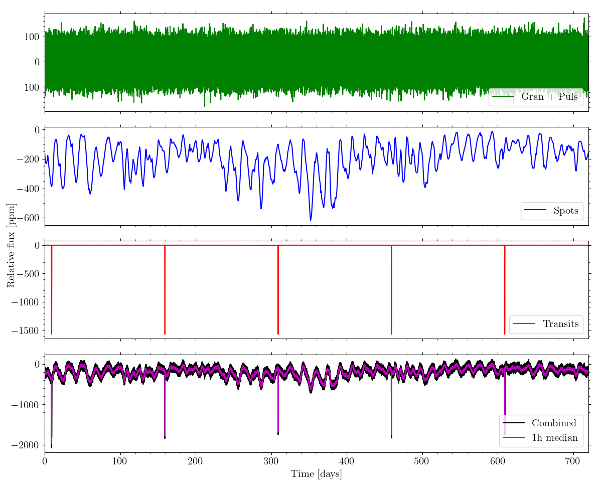
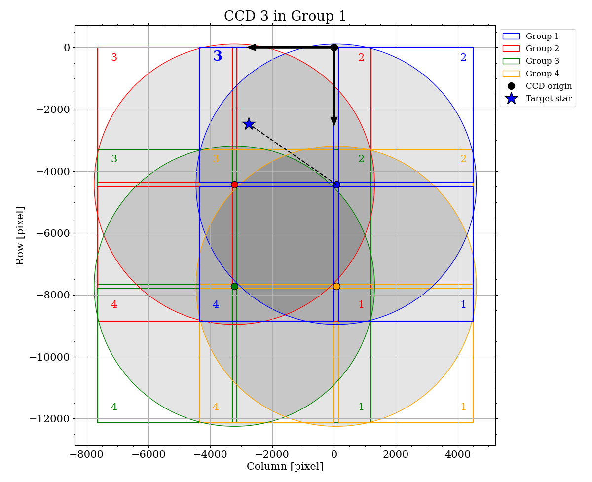

PLATOnium¶
We here provide a quicklook of the important scripts and their use cases. PLATOnium is PlatoSim’s user friendly command-line interface to quickly setup a large scale multi-camera and multi-quarter simulation using the PLATO Input Catalogue (PIC) and realistic stellar variability input. Thus, almost all simulations will involve the three following steps provided by the software:
picsim: Tool to generate a PIC star cataloguevarsim: Tool to generate noise-less light curvesplatonium: Tool to run a PlatoSim multi-camera and multi-quarter simulation
Both picsim and varsim creates immediate userable input files to run platonium in an easy and generic way.
Notice all script share the same architecture for default input- and output argument parsing:
-i: Input file/folder-o: Output file/folder-v: Verbosity (a.k.a log level)-p: Flag for plotting
Both varsim and platonium have adjustable verbosity levels (i.e. log level), which becomes important when running simulations on a cluster. The verbosity is also identical to PlatoSim usage:
-v 0: Cluster mode: Disabling print and warnings, and no log files are saved-v 1: Default mode: Print details to bash but do not save log files (Default)-v 3: Debug mode : Print details to bash and saves all log files
Poetry install¶
Attention
Only Python 3 can be used to install and run PLATOnium!
Important
The following guide explains how to install PLATOnium in combination with PlatoSim, however, if you’re interested in using the L1-pipeline to extract reduced on-ground and on-board PLATO light curves you’ll need additionally to follow the L1-pipeline l1_installation. We note that PlatoSim/PLATOnium do allow fast and generic on-board light curve extraction for the generation of raw light curves.
Follow the steps below to successfully install and run PLATOnium. The blue colored admonition boxes elaborate further steps to be taken if installing on a computing cluster:
Install PlatoSim3 from source:
If not installed, install PlatoSim following PlatoSim’s Main Page and follow the developer installation by git clone directly from PlatoSim’s GitHub repository.
Installing PlatoSim on a cluster
Computing clusters typically have a high standard of version control for software and hence the user cannot install software directly, but needs to load pre-installed software modules. As prerequite several software modules needs to loaded before installing PlatoSim. We give an example here of modules needed for KU Leuven’s associated cluster, but do check the software on your own cluster as it might be different.
Create a Python environment:
Since the force of PLATOnium comes from it usage to running simulations on a computing cluster we use Poetry to handle the package managing (which is far better than conda) as it manage your project installation easily over multiple platforms in a deterministic way.
If not done so, first install Poetry:
pip install --user poetry
Verify that poetry was installed successfully by typing
poetry --version.Poetry prerequiste on cluster
Again make sure that the relevant modules are loaded beforehand. We strongly recommend to install Poetry through a Conda environment, since computing clusters typically only have limited amount of Python versions installed by default. While using Conda all Python versions can be installed and thus an exact freeze of the poetry installation can be made. Thus first install Conda (or Miniconda) and then create a new environment called e.g.
py39if installing with Python 3.9:conda create -n py39 python=3.9
Now activate your new conda environment:
conda activate py39
Verify that the python location is correct with
which python. Note that clusters typically don’t support much disk space for$HOME, and hence it is better to install Poetry on your$DATAdisk storage instead. You can parse the installation location of Poetry (</path/to/poetry>) with:pip install --user poetry | POETRY_HOME=</path/to/poetry> python -
Verify that poetry was installed successfully by typing
poetry --versionand verify the installation location withwhich poetry. Next change the installation location of the virtual Poetry environment to:poetry config virtualenvs.path </path/to/poetry>/virtualenvs
In order for Poetry to be available from any compute node, you need to include the following path to your
~/.bashrcfile:POETRY=<path/to/poetry>/bin export POETRY
Deactivate your conda environment (or any other active Python environment) and install PLATOnium with poetry:
conda deactivate poetry install
Finalize setup
As PLATOnium is a Python wrapper around PlatoSim it thus takes advantages of all the utilities and scripts that continuously are being develop for PlatoSim. Naturally PLATOnium share the same path environment variable
PLATO_WORKDIRas PlatoSim, which we strongly recommend to use for your working directory of your simulation projects - an elaboration will follow in the section of General information. Thus, create a project directory a convenient location:mkdir </path/to/plato_workdir>
Now to finalize the setup, in the PLATOnium’s base directory launch the script
setep.shand parse</path/to/plato_workdir>as input:./setup.sh </path/to/plato_workdir>
The script will finalize your setup doing the following:
Adds the PlatoSim’s
$PLATO_WORKDIRto your.bashrcfileSet up the file structure and writes these paths to the
.bashrc(and reloads it)Adds the PLATOnium scripts to
$HOME/.local/binthus making them globally executableCreate a
.platonium_initfile to register the setup. If you want to change your working directory simply remove this file and runsetup.shagain
Activate Poetry and run simulations
Finally, always activate your Poetry environment from the base directory before using any of the scripts in this software package:
poetry shell
To disable it, from your PLATOnium base directory use:
exit
picsim¶
Create a customized PIC
To speed up the process of running realistic simulations a script called picsim (a.k.a. PIC of Destiny) is made available for the user. This script draw target and contaminant stars from the asPIC 1.1.0 created by Montalto et al. (2021).
Since picsim relies on the old version of asPIC currently stars can only be drawn from the old North PLATO Field (NPF; \(l=65^{\circ}\), \(b=+30^{\circ}\)) and South PLATO Field (SPF; \(l=253^{\circ}\), \(b=-30^{\circ}\)). A total number of 302,743 PLATO targets compose the PIC samples (P1, P2, P4, and P5), of which 8,587,898 photometric contaminants are catalogued within a 60 arcsec radial distance from each target. The figure below shows all P1 sample stars from both the NPF and SPF colour coded by their magnitude.

Usage function: To get an overview of its usage simply type:
picsim -h
Prelook: As a simple example, say we want to create a catalogue of 100 P1 stars from the SPF. As a sanity check you can parse the flag -t which produce a few plots of your target star selection. If you also want to see the number statistic for the contaminants simply parse the plotting flag -p instead. Hence try to launch the following commands yourself:
picsim 100 P1 SPF -t
picsim 100 P1 SPF -p
General examples: To elaborate on the usage, we here show a few useful examples:
picsim 100 P1 NPF --group 1 --camera 24 -o </path/to/outdir>
picsim 100 P5 SPF --spec G --lum V --mag 9.5-12.2 -o </path/to/outdir>
picsim all P1 NPF --mag_limit 18 --dis_limit 30 -o </path/to/outdir>
In the first example we draw 100 P1 stars from the NPF but only visibible by all N-CAMs in camera-group 1 and stars being observable with all 24 N-CAMs. In the second example we draw 100 P5 stars from the SPF but limit our catalogue to only contain G dwarf main sequence stars within the PLATO passband magnitude range of 9.5-11.2. In the last example we select all P1 stars from the NPF but limit here number of contaminants stars by only saving stars brighter than 18 magnitude within a maximum radial distance of 30 arcsec (i.e. within 2 pixels) from their target star. Notice that all examples shown we parse the argument -o which is needed in order to save the stellar catalogue to the . To lower the I/O writing between software packges the stellar catalogues are saved to the binary format called feather (with file extension .ftr).
Combine or replot catalogue(s): Notice that picsim also can be used to combine catalogues or replot an old catalogue produced by itself. Both can simply be done by giving the already exsisting feather binary catalogue files as input to picsim again using the argument -i as follows:
picsim all all SPF -i </path/to/indir>/starcat**.ftr -o </path/to/outdir> -p
Note we here use the asteriks ** to specify that all files should start with starcat (which is the default output prefix of picsim) and all files needs to be in feather format .ftr. To make sure that all targets are selected we have here slected all for the two first mandatory arguments. Currently it is not possible to combine catalogues from different PLATO pointing fields, hence, we imagine that the previous catalogues all drawed stars from the SPF.
varsim¶
Generate noise-less light curves
In order to help the process of generating variable input light curves for PlatoSim, as part of PLATonium the script varsim is made available. Given a star and a exoplent this script creates a synthetic stellar and exoplanet variability model directly inline with the cadence of your simulated observations. The script is developed around modelling stellar activity modulations, granulation, and stellar convection driven oscillations (p-modes). Exoplanet transits and phase curve variations (due to Doppler beaming and ellisoidal distorsion) can likewise be included. There is a future plan on including a eclipsing binary model as well. The stellar p-modes and transit eclipses are derived from synthetic PHOENIX spectra being convolved with the instrumental bandpass. The figure below shows an example of a generated noise-less light curve of a variable star with a Neptune-sized transiting planet. We refer the reader to the technical note PLATO-PL-KUL-0020 for a more detailed description.
{kind=link}

Usage function: To get an overview of its usage simply type:
varsim -h
General usage: Seen from the usage function there are several ways to create a noise-less light curve using varsim. The following two examples show the most standard way to run varsim:
varsim --star_params 5777 4.5 0.0 --planet_params 100 50 0 90 0 1 1 --time 365 -p
varsim --star_params 5777 4.5 0.0 --planet_params 100 50 0 90 0 1 1 --quarter 1-8 -o </path/to/varsource.txt>
In both examples we parse the stellar- and planet parameters, respectively. Note that the --quarter argument represent mission quarters (i.e. one 1 quarter is 30 days) and, if invoked, this argument overwrites the --time argument (likewise given in units of days). The quarter arguments is especially handy as it allows you to e.g. produce noise-less light curves with a time column suited for simulations starting beyond mission BOL (e.g. use --quarter 5-8 to get a ligth curve starting after one year of mission BOL).
Intuitively the the user always needs to parse a star argument: either --star or --star_params. By default the granulation and pulsation signals are activated, but all other stellar vaiability signals (i.e. spots for now) needs to be activated by parsing the corresponding flag. You can exclude the granulation and pulsations independetly by parsing none as argument for their scaling relations:
varsim --star_params 6000 4.5 0.0 --gran none --puls none --spot --time 100 -p
This example shows how to include only stellar spot modulation in the final light curve.
Case studies: To make it easier for the user to quickly fetch a favorit star-planet system, it is possible to respectively save your favorit star and your favorit planet to the file source_star.py and source_plaent.py placed in the folder $PLATONIUM/platonium/var. Simply copy one of the existing code block starting with source == "<name>" and add the star/planet parameters. Note you need to obey the unit convention by Astropy (i.e. multiplying with u.<unit>). A few systems exists by default, and you can likewise cross-match different systems such as:
varsim --star Sun --planet CoRoT-1b --time 30 -p
Photometric standards: Regarding photometric standard stars the following examples are two potential solutions:
varsim --quarter 2-4 -p
varsim --star std --quarter 2-4 -p
By parsing nothing else than the time/quarter duration, the first example is simply a constant star. The second example calls a simple script that models a short-period rotationally modulated A type (Ap) star as simple sinusoidal vairations with occasional contribution of the second harmonic. The rotational period is randomly drawn from a uniform distribution between 1-3 days and we assume that a typically distribution of 10-30 mmag in the Kepler passband (due to current limited knowledge of the typical amplitudes of these stars in the PLATO passband).
platonium¶
Run multi-camera and multi-quarter PlatoSim simulations
This script uses the PIC targets and their contaminants (created with picsim) to simulate realistic imagettes or light curves using PlatoSim. It can simulate any of the 24 normal cameras/telescopes, for an arbitary number of mission quarters. Since a nescessary rotation (along the roll axis) of the spacecraft platform is required in order to repoint the solar panels every 90 days, simulations cannot realistically extend beyond a quarter of a year. Given an PIC input sample, the script will automatically simulation all targets being visible by any camera falling on one of the 4 CCDs. The fact that the PLATO spacecraft will be equipped with 4 camera groups consisting of 6 cameras each, constrains the efficient use of node-cores a computing cluster. In order to make the simulation as realistic as possible, random seeds of various intrinsic- and instrumental effects are included, meaning that each camera within each camera group needs to be simulated independently (which indeed are the raw imaging output of PLATO).
{kind=link}

General setup: Before creating your first project and start running simulations we here present some general information that will help you get started:
PLATOnium naturally shares the same path environment
PLATO_WORKDIRof PlatoSim. We strongly recommend to set and use this path environment as the working directory for your projects, as it allows faster I/O formatting.To secure that
platoniumcan parse all the necessary input files to PlatoSim, within any project directory (</path/to/plato_workdir/project_name>) it is mandatory to have a folder called input where you place all inputfiles. In this folder you need to place yourinputfile.yaml,starcat**.ftr, etc. Hence a directory tree example will look like:/path/to/plato_workdir ├── /project_name ├── /input ├── inputfile.yaml ├── starcat**targets.ftr ├── starcat**contaminants.ftr └── varSourceFile.txtWhen set properly, one can simply parse the argument
--project <project_name>toplatoniumand all files within</path/to/plato_workdir/project_name>will be read automatically.The general rule while using
platoniumis that any argument parsed from the terminal will overwrite the configured parameter within yourinputfile.yamlif it exists. E.g. the optional input argument--cadence <cycle_time>will overwrite the parameter calledCycleTimegiven in the input YAML file.
Usage function: To get an overview of its usage simply type:
platonium -h
Seen from the usage function, platonium takes 4 mandatory input parameters being the star ID in your target catalogue (starcat**targets.ftr), the camera-group ID, the camera ID, and lastly the quarter number (where 1 is the frist quarter from mission BOL).
General usage: It is possible to parse your input project path in the two following ways:
platonium 1 1 1 1 --project <project_name> -p
platonium 1 1 1 1 -i </path/to/plato_wordir/project_name> -p
Some frequent changed observational parameters:
platonium 2 4 6 24 --project <project_name> --cadence 50
platonium 2 4 6 24 --project <project_name> --seed 1234567
platonium 2 4 6 24 --project <project_name> --mask 10
In the first example we change default cadence from 25s to 50s. Next example the --seed argument should be parsed when you want to reproduce your results. We here use the updated version of Numpy’s Random Generator to bootstrap or configure all random seeds used in PlatoSim. Lastly, if you have turned on the PlatoSim’s in-built photometry extraction within your inputfile.yaml then you can change the mask-update using the argument --mask given a value in days.
Variable sources: Easy to include variable sources. varsim provide the correct format for inclusion here:
platonium 3 2 6 24 --project <project_name> --varfile </path/to/varSourceFile.txt>
platonium 3 2 6 24 --project <project_name> --varlist </path/to/varSourceList.txt>
Notice the difference between varSourceFile and varSourceList. The first is the ascii file containing the noise-less light curve, and the lastter is a ascii file containing the star indices as a first column and the full path and filename of each varSourceFile you want to include. Thus, first example only adds a variable signal for your target stars, whereas the second example can be used to include variable signals for the stellar contaminants as well (particularly important to get a realistic distribution of false-positive detections of exoplanet transits).
Pointing Error Sources (PES): Beyond the input files that are possible to parse to PlatoSim (see here) in PLATOnium it is furthermore possible to include the following PES parameters:
instrumentPRE.txt: Pointing Repeatability Error (PRE) [Quarter (int), Yaw (\("\)), Pitch (\("\)) Roll (\("\))]instrumentAPE.txt: Absolute Pointing Error (APE) [Tilt (\(^{\circ}\)), Azimuth (\(^{\circ}\))]
For now these files need to be generated manually, but there will soon be a script to this in an automatic way. Likewise to include CCD misalignment errors. All PES files can simply be placed within your input folder and platonium will automatically fetch the information from them and configure the spacecraft accordingly in PlatoSim.